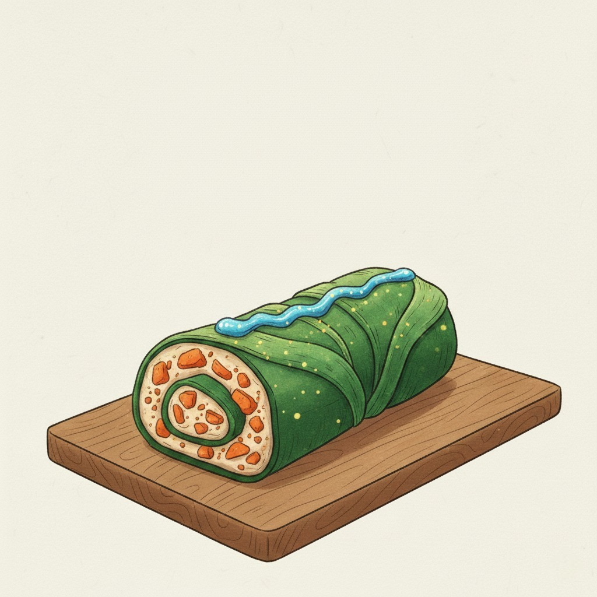
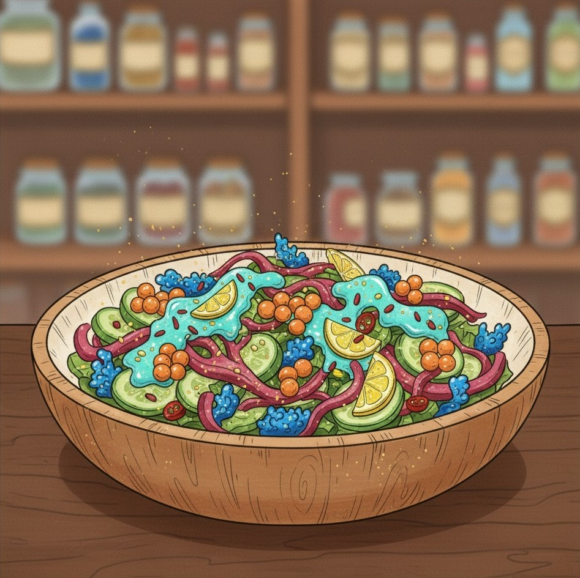

Algás koralltekercs
A gyerekek kedvence! Gyors és tápláló uzsonna.
Hozzávalók:
- Friss Arany-Alga (2 levél)
- Korallropogós (aprítva)
- Kagylókrém (natúr)
- Egy csepp buborékszósz

A gyerekek kedvence! Gyors és tápláló uzsonna.

Könnyű és frissítő, tele van tengeri zöldségekkel.
Különleges alkalmakra, ahogy Oszkár nagymamája készíti.
A korallropogóst törd apróra, és szórj belőle a salátádra vagy a kagylókrémedbe! Extra ropogós élmény és fantasztikus íz garantált!
Küldd el nekünk itt, és azonnal megjelenik a többi között!